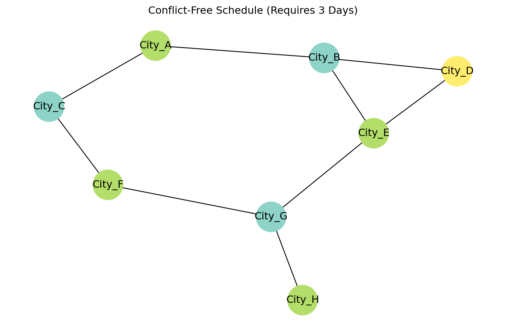

Module 3 — Hands-on Demonstrations using Python & NetworkX
Author
Affiliation
Siju Swamy
Saintgits College of Engineering (Autonomous)
Introduction
This module introduces practical graph modelling and algorithm execution using Python and the NetworkX library. Students will learn to construct real and simulated graphs, visualize structure, compute metrics, and explore algorithms such as shortest paths, centrality, and colouring.
The objective is to bridge theoretical understanding from discrete mathematics to real-world implementations in engineering problems such as network routing, urban mobility, scheduling, and social network analytics.
Learning Objectives
By the end of this module, students will be able to:
Construct complex graphs directly from dataframes/datasets.
Apply algorithms: Dijkstra (Routing), Kruskal/Prim (MST), and Greedy Colouring.
Analyse network robustness using Degree and Betweenness centrality.
Perform visual data-driven studies to interpret network structure.
Constructing Graphs from Real-World Data
Real-world data rarely comes in neat adjacency matrices. In engineering and data science, network data usually exists in CSV files, SQL databases, or Excel sheets.
To bridge this gap, we utilize data handling libraries (like Pandas) to load datasets representing entities (nodes) and connections (edges). For our case study, we simulate a dataset of 8 cities and the construction cost (in millions) to build high-voltage lines between them.
Once the graph is built, we can apply standard optimization algorithms to save costs and improve efficiency.
Minimum Spanning Tree (MST)
The Scenario: We need to connect all cities with power lines to ensure everyone has electricity, but we want to minimize the total construction cost. We do not need redundant loops; we just need basic connectivity.
The Solution: We apply Kruskal’s or Prim’s Algorithm. This algorithm identifies a subset of edges that connects all vertices together, without any cycles, and with the minimum possible total edge weight. By comparing the total cost of the full network versus the MST, engineers can quantify potential infrastructure savings.
Algorithm: Kruskal’s or Prim’s Algorithm (implemented via minimum_spanning_tree).
# Calculate the Minimum Spanning Treemst = nx.minimum_spanning_tree(G, weight='Cost')# Calculate Total Savingstotal_cost = df['Cost'].sum()mst_cost =sum(d['Cost'] for u, v, d in mst.edges(data=True))print(f"Total Network Cost: ${total_cost}M")print(f"Optimized MST Cost: ${mst_cost}M")print(f"Savings: ${total_cost - mst_cost}M")# Visualizing the MST vs Original Graphplt.figure(figsize=(10, 6))# Draw original faint edgesnx.draw_networkx_edges(G, pos, alpha=0.2, style='dashed')# Draw MST edges boldlynx.draw(mst, pos, with_labels=True, node_color='gold', node_size=1200, width=3, edge_color='blue')plt.title("Optimized Infrastructure (Minimum Spanning Tree)")plt.show()
Total Network Cost: $107M
Optimized MST Cost: $72M
Savings: $35M
Shortest Path (Routing)
The Scenario: A maintenance team needs to travel from City_A to City_H as quickly as possible to fix a fault.
The Solution: We apply Dijkstra’s Algorithm. Unlike the MST (which optimizes the whole network), Dijkstra focuses on the optimal route between two specific points. It accounts for the accumulated “cost” (distance, time, or money) along the path.
Optimal Route from City_A to City_H: ['City_A', 'City_B', 'City_E', 'City_G', 'City_H']
Total Travel Cost: 45
Resource Allocation: Graph Colouring
The Scenario: We need to assign maintenance schedules to these cities. Adjacent cities cannot be maintained on the same day because shutting down two connected nodes simultaneously might destabilize the grid. What is the minimum number of days required to complete the schedule?
The Solution: We apply Greedy Graph Colouring.
The Rule: No two connected nodes can have the same “color” (value).
The Result: The algorithm assigns a time slot to every city. The total number of unique colors used (the Chromatic Number) tells us the minimum days required for the full cycle.
Algorithm: Greedy Graph Colouring.
# Apply Greedy Coloringstrategies = nx.coloring.greedy_color(G, strategy='largest_first')print("--- Maintenance Schedule (Graph Colouring) ---")for node, color in strategies.items():print(f"{node}: Day {color +1}")# Calculate Chromatic Number (Min days needed)min_days =max(strategies.values()) +1print(f"\nMinimum days required for full cycle: {min_days}")# Visualizing the Schedulecolors = [strategies[n] for n in G.nodes()]plt.figure(figsize=(8, 5))nx.draw(G, pos, node_color=colors, cmap=plt.cm.Set3, with_labels=True, node_size=1200)plt.title(f"Conflict-Free Schedule (Requires {min_days} Days)")plt.show()
--- Maintenance Schedule (Graph Colouring) ---
City_B: Day 1
City_E: Day 2
City_G: Day 1
City_A: Day 2
City_C: Day 1
City_D: Day 3
City_F: Day 2
City_H: Day 2
Minimum days required for full cycle: 3

Network Analysis: Centrality Measures
The Scenario: We need to secure the network against attacks or random failures. We must answer two questions: 1. Which city is the biggest “Hub”? 2. Which city is the most critical “Bridge”?
The Solution: We calculate Centrality Measures.
Degree Centrality: Measures how many direct connections a node has. In our grid, this identifies the central distribution hubs.
Betweenness Centrality: Measures how often a node acts as a bridge along the shortest path between two other nodes. This identifies Single Points of Failure. If a node with high Betweenness fails, the network is likely to split into disconnected islands.
# 1. Compute Centralitiesdegree_cent = nx.degree_centrality(G)betweenness_cent = nx.betweenness_centrality(G, weight='Cost')# 2. Advanced Visualization: Data-Driven Plottingplt.figure(figsize=(12, 8))# Get the current axes explicitly so we can refer to it laterax = plt.gca()# Size of node = Degree (How connected it is)node_sizes = [v *5000for v in degree_cent.values()]# Color of node = Betweenness (How critical it is)node_colors =list(betweenness_cent.values())# Draw the nodesnodes = nx.draw_networkx_nodes(G, pos, node_size=node_sizes, node_color=node_colors, cmap=plt.cm.Reds, edgecolors='black', ax=ax)# Draw edges and labelsnx.draw_networkx_edges(G, pos, width=1.5, alpha=0.6, ax=ax)nx.draw_networkx_labels(G, pos, font_color='black', font_weight='bold', ax=ax)# --- FIX START ---# Create the ScalarMappablevmin =min(node_colors)vmax =max(node_colors)sm = plt.cm.ScalarMappable(cmap=plt.cm.Reds, norm=plt.Normalize(vmin=vmin, vmax=vmax))sm.set_array([]) # Pass the 'ax' argument so matplotlib knows where to put the barplt.colorbar(sm, ax=ax, label="Betweenness Centrality (Vulnerability)")# --- FIX END ---plt.title("Vulnerability Analysis: Bigger = More Connections, Redder = More Critical")plt.axis('off')plt.show()# Interpretative Outputcritical_node =max(betweenness_cent, key=betweenness_cent.get)print(f"CRITICAL ALERT: {critical_node} controls the highest flow in the network.")
CRITICAL ALERT: City_G controls the highest flow in the network.
Interpretative Study: Summary
By combining these algorithms, we can derive actionable engineering insights from raw data:
Analysis Type
Metric/Algorithm
Engineering Insight from Data
Connectivity
Data Ingestion
The network structure reveals the physical density of the grid.
Optimization
MST
Identifies which power lines are essential and which are redundant “backup” lines.
Scheduling
Colouring
Determines the minimum resources (time slots, frequency channels) needed to avoid conflicts.
Vulnerability
Betweenness
Pinpoints the exact city that, if disabled, causes the maximum disruption to the grid.